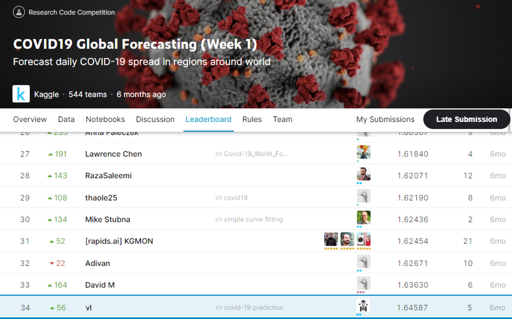
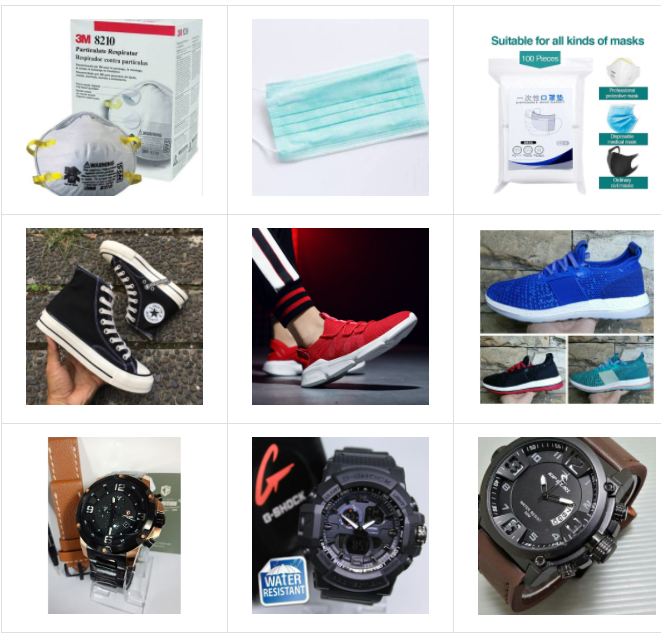
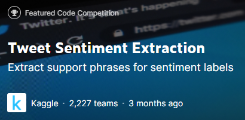
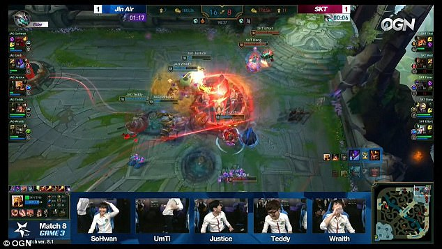
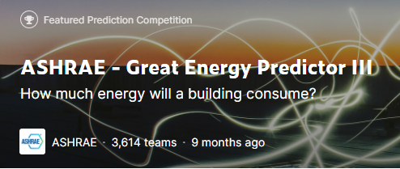

March 28, 2020
Background: Kaggle launched COVID-19 forecasting challenge on confirmed cases and fatalities by region.
Forecast period: March 25 till April 23, 2020.
Best Model: Polynomial Regression.
Evaluation: Root mean squared logarithmic error (RMSLE): 1.6459 (top 7% in private leaderboard).
Solo participation.


Goal: Categorize items sold in Shopee e-commerce with the best product detection system by training more than 100k images
Model used: Pre-trained InceptionResNetV2 (71% accuracy - top 53% in private leaderboard)
No of project mates: 1

Goal: Extract the right word or phrase from the tweet that best supports its sentiment
Model used: Pre-trained roBERTa language model (71% word-level Jaccard score - top 55% in private leadership)

Goal: 1) Estimating probability for a team to win a league of legends game based on machine learning models.
2) Cluster team strategy according to winning and losing teams
Best prediction model: Stacking Ensemble (Multi Layer Perceptron, Random Forest, Boosting Decision Tree) - Precision (97.5%) to capture lowest false positives
Clustering model: Kmeans and Kmodes clustering
No of project mates: 3

Goal: Develop accurate prediction models for meter readings of buildings based on the meter type: chilled water, electric, hot water, and steam meters.
Dataset: Jan-Dec 2016 (train), Jan 2017-Dec 2018 (test)
Best model: LightGBM (RMSLE: 1.62 - top 81% in Private Leaderboard)
No of project mates: 3

Goal: To provide holistic estimate of life expenctancy and identify reasons for disparities so that government can design better policies for higher risk areas.
Data Pipeline: 1) Data preparation using Python and Excel, 2) Data warehouse (SQL OLAP) and data lake (Cloud SQL), 3) Visualization (Tableau)
Model used: Regression model
No of project mates: 3